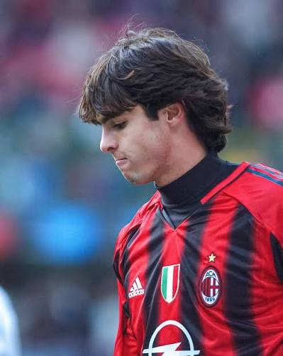

Uno de los momentos más recordados ocurrió en las semifinales frente al Manchester United. En la ida, disputada en Old Trafford, Kaká anotó dos goles espectaculares, incluido uno en el que superó a varios defensores antes de definir con gran calidad. En la vuelta, el Milan venció por 3-0, clasificándose a la final con un marcador global de 5-3. Aquella actuación es considerada una de las mejores exhibiciones individuales en la historia de la Champions League.

El magnífico gol ante el Liverpool.